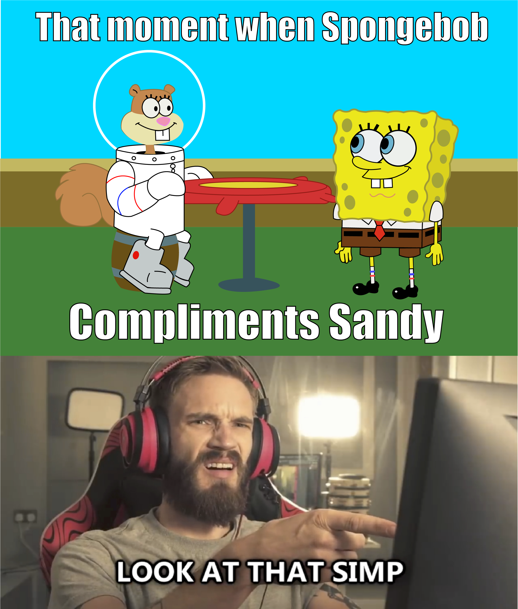
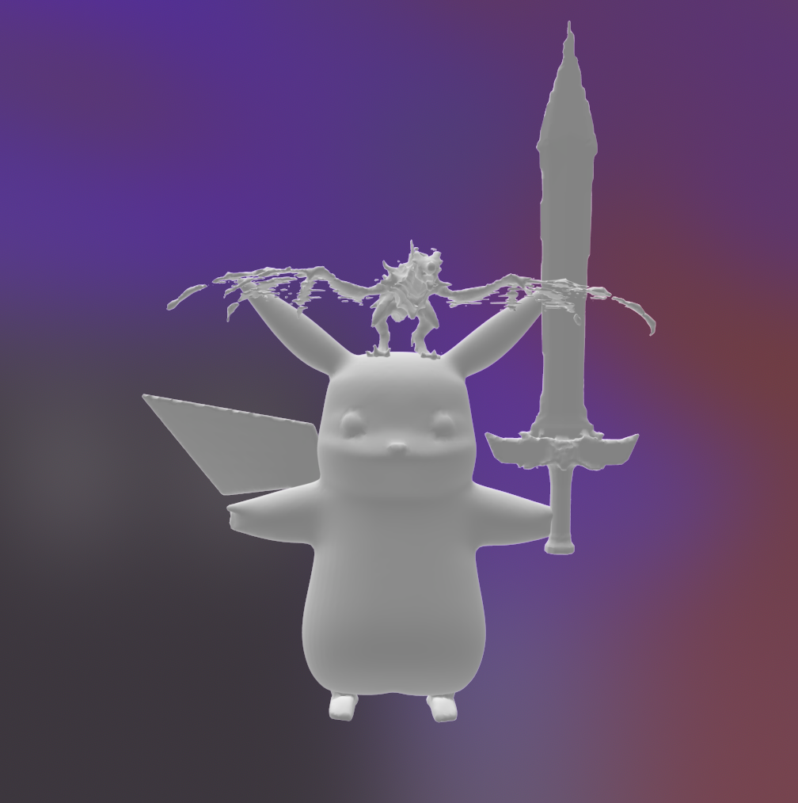
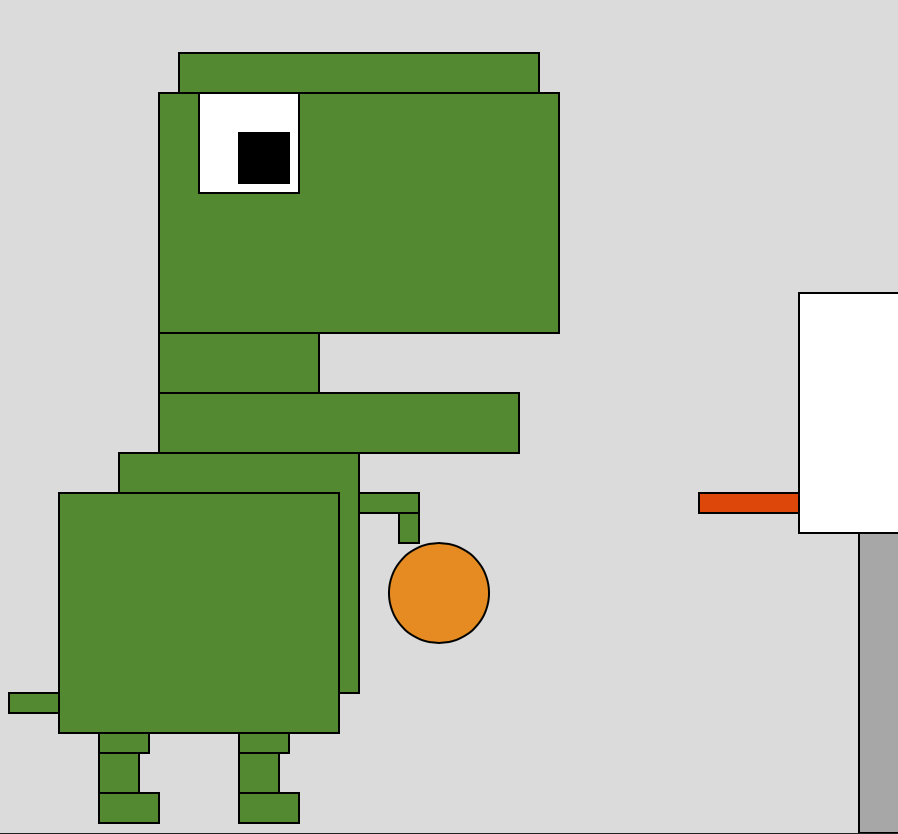
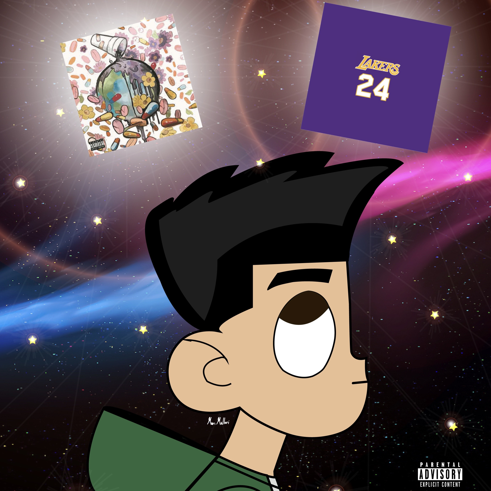
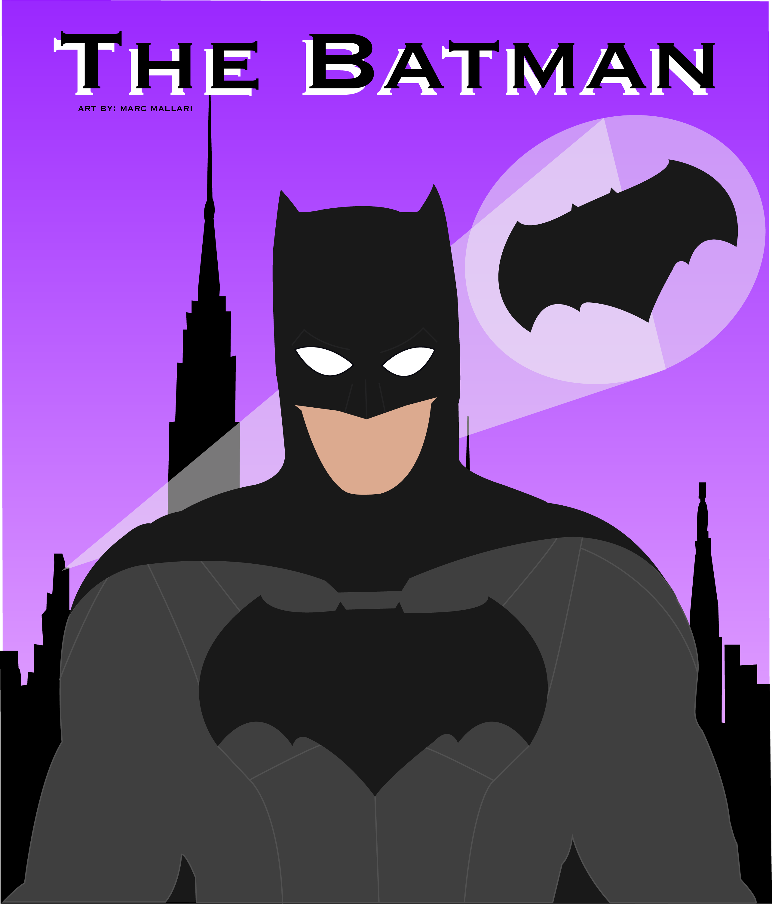
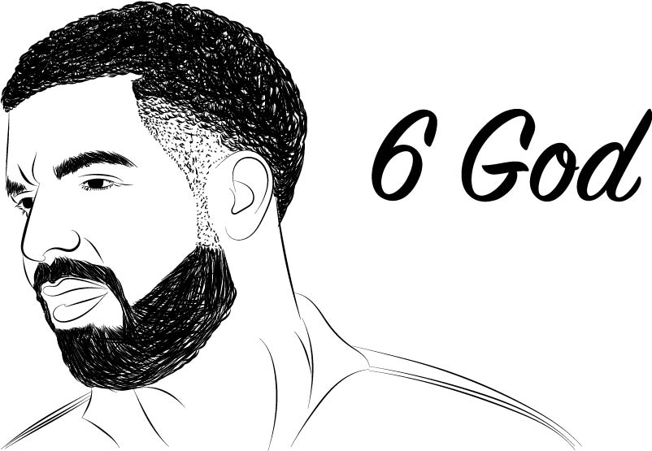
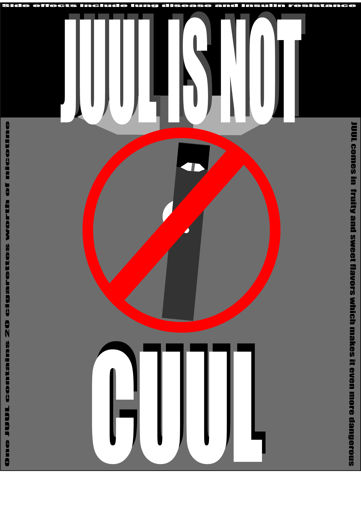

The Simp Meme
Adobe Illustator & PewDiePie Meme Image

8.5 in x 10 in
This art is about Spongebob complimenting Sandy & then being called a simp for it because in todays generation, a man who does something sweet for a woman is called simp.
Kobe Bryant Glitch
Audacity & TextEdit

1920 x 1080
This glitch art is tribute to my favorite basketball player of all time, Kobe Bryant & paying my respects to him by making this art.
Pikachu the last Warrior
Meshmixer & Adobe Dimensions
1008 x 1040
This 3D model was inspired by the show Pokemon with a mixture of other dangerous creatures like the dragon on it's head & the sword of excalibur.
Self Portrait of Me
Javascript
8 x 8
This is a self portrait of me that is minecraft inspired using Javacript to code it.
Dinosaur playing basketball
Javascript
This illustation of a dinosaur playing basketball was coded with Javascript as well, the dinosaur was an inspiration from the t-rex game when you have no internet connection.
Eternal Marc
Pen Tool, Adobe Illustator

2762 x 2762 pixels
This was my own parody version of the album cover Eternal Atake Deluxe by Lil Uzi Vert that I called Eternal Marc because I tried to make the character look like me & also I added my favorite artist Juice Wrld & Kobe Bryant at the top of the pictures as a sign of my respects to them.
The Batman
Adobe Illustrator
2568 x 3007 pixels
A vector illustration drawing of the batman based on the Batman v Superman movie. The suit is similar to the Frank Miller Batman, which is honestly one of my favorite versions of the hero.
6 God
Adobe Illustrator
802 x 555
Drew a version of my old favorite rap/r&b artist the 6 god also known as drake. Used the pen tool to draw this art of drake
Juul Isn't Cuul
Adobe Illustrator
2555 x 3587 pixels
Originally made this for a contest on making a poster for an anti vaping organization & unfortunately didn't win but still here to spread awareness on the harmful effects on it.
GenZinematics
Adobe Illustrator

2564 x 2996 pixels
Currently in phase one of this business I plan to grow called GenZinematics. Basically this business is film production company that I made with friends & I hope to make this into a fulltime career. Add us on Instagram @genzinematics we will be posting soon hopefully!.